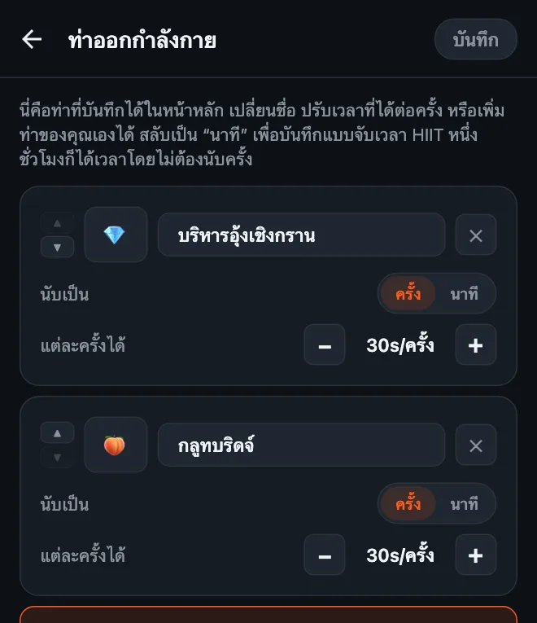
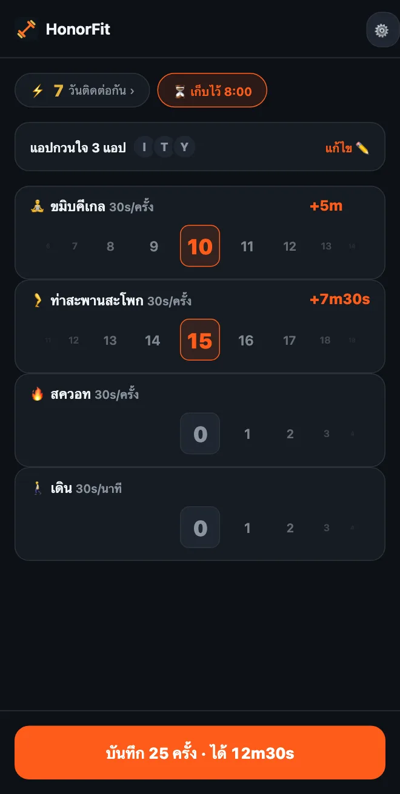

ขมิบคีเกลเพื่อปลดล็อกมือถือ
สวัสดีครับทุกคน! ผมทำ HonorFit เพราะอยากให้การวิดพื้นมาขวางระหว่างผมกับ Instagram โดยไม่ต้องตั้งมือถือให้กล้องคอยนับ (ทำแบบนั้นที่ปั๊มน้ำมันไม่ใช่โมเมนต์ที่น่าภูมิใจที่สุดของผมเลย 555) คุณออกกำลังกาย กดบันทึกเอง แล้วแอปก็ปลดล็อก
แต่การวิดพื้นไม่ได้เหมาะกับทุกคน และหนึ่งในท่าที่เข้ากับไอเดียนี้ที่สุดก็ไม่ใช่วิดพื้นเลย แต่เป็นการขมิบคีเกลและท่าสะพานสะโพก มาดูกันว่าทำไม และตั้งค่ายังไง
ทำไมการขมิบคีเกลถึงเข้ากับระบบความซื่อสัตย์ได้ดีขนาดนี้
ไม่มีใครมองเห็นตอนคุณขมิบ ทั้งคนที่นั่งข้างๆ บนรถเมล์ เพื่อนร่วมงาน และแน่นอนว่ากล้องมือถือก็มองไม่เห็น แอปที่ใช้กล้องนับครั้งนับท่านี้ไม่ได้เลย
HonorFit ไม่ได้พยายามนับ เพราะใช้ระบบความซื่อสัตย์: คุณขมิบ หมุนวงล้อไปที่จำนวนครั้งที่ทำ จบ คุณเลยหาเวลาเล่น TikTok ได้ระหว่างประชุม ตอนต่อคิวจ่ายเงินในซูเปอร์มาร์เก็ต หรือตอนนอนเล่นบนโซฟา โดยไม่มีใครรู้
และมันยังแก้ปัญหาที่ทุกคนพูดถึงเรื่องขมิบคีเกล: “รู้ว่าควรทำ แต่ชอบลืม” ถ้าคุณหยิบมือถือขึ้นมาวันละหลายรอบ (ไม่ได้ว่านะ ผมก็เป็น) ตอนนี้ทุกครั้งที่หยิบก็กลายเป็นตัวเตือนความจำ
ท่าสะพานสะโพกไม่ได้ล่องหนแบบนั้น แต่ทำบนพื้นหรือแม้แต่บนเตียงก็ได้ ไม่ต้องใช้อุปกรณ์ และเข้าคู่กับการขมิบคีเกลได้ดีมาก
วิธีตั้งค่า
ตั้งแต่เวอร์ชัน 1.15.0 เป็นต้นไป ทั้งหมดนี้ใช้ฟรี: คุณเพิ่มท่าของตัวเองได้สูงสุด 3 ท่าโดยไม่ต้องมี Pro และทั้งขมิบคีเกลกับท่าสะพานสะโพกก็เป็นท่าแนะนำที่เพิ่มได้ในแตะเดียว (Pro ราคา $3 ต่อเดือน หรือ $19.99 จ่ายครั้งเดียวในสหรัฐฯ ราคาต่างกันไปตามประเทศและสกุลเงิน สโตร์จะแสดงราคาในประเทศของคุณ ช่วยให้เพิ่มได้ไม่จำกัด) วิธีทำมีดังนี้:
- แตะรูปเฟืองที่หน้าหลัก แล้วแตะการ์ด ท่าออกกำลังกาย
- แตะท่าแนะนำ บริหารอุ้งเชิงกราน (คีเกล) แล้วแตะ กลูทบริดจ์ (ท่าสะพานสะโพก) ไม่ต้องพิมพ์อะไรเลย และมีอีโมจิมาให้ในตัว: 💎 สำหรับคีเกล และใช่ครับ 🍑 สำหรับท่าสะพาน
- ตั้ง แต่ละครั้งได้ ด้วยปุ่ม −/+ (ค่าที่ผมแนะนำอยู่ด้านล่าง)
- ลบท่าที่ไม่ใช้ด้วย ✕ (ดึงข้อไหม?) แล้วแตะ บันทึก

วิธีใช้หน้าแก้ไขท่าแบบครบทุกขั้นตอน รวมถึงการออกกำลังกายแบบจับเวลา อยู่ในบทความวิธีปรับแต่งท่าออกกำลังกายใน HonorFit
แต่ละครั้งควรได้เวลาหน้าจอเท่าไหร่?
ผมจะเริ่มแบบนี้:
| ท่าออกกำลังกาย | แต่ละครั้งได้ | หนึ่งเซ็ตทั่วไปได้ |
|---|---|---|
| 💎 ขมิบคีเกล | 30 วินาที | ขมิบ 10 ครั้ง = 5 นาที |
| 🍑 ท่าสะพานสะโพก | 30 วินาที | 15 ครั้ง = 7 นาที 30 วินาที |
| 🚶 เดิน (จับเวลา) | 30 วินาทีต่อนาที | เดิน 20 นาที = 10 นาที |
ขมิบ 10 ครั้งบวกท่าสะพาน 15 ครั้ง จะได้ประมาณ 12 นาทีครึ่ง แล้วค่อยปรับจากตรงนั้น ถ้าเก็บเวลาได้ง่ายเกินไป ก็ลดค่าลง ถ้าจับได้ว่าตัวเองบันทึกครั้งที่ไม่ได้ทำ แปลว่าราคาสูงเกินไป ก็ลดลงเหมือนกัน

เรื่องหนึ่งเกี่ยวกับการขมิบคีเกล: ทำเยอะไม่ได้แปลว่าดีกว่า เว็บไซต์สุขภาพอย่าง MedlinePlus และ Cleveland Clinic มักพูดถึงเซ็ตละประมาณ 10 ครั้ง วันละไม่กี่รอบ และบอกว่าทำมากเกินไปอาจทำให้กล้ามเนื้อตึงเกินไปได้ เพราะฉะนั้นอย่าขมิบ 100 ครั้งเพื่อแลกดู YouTube หนึ่งชั่วโมงนะครับ! ผมเลยจะให้ค่าเวลาต่อครั้งของการขมิบคีเกลพอสมควร แล้วให้ท่าสะพานสะโพก สควอท หรือการเดินรับส่วนที่หนักกว่าไป
ท่าพื้นฐาน
ผมเป็นนักพัฒนาแอป ไม่ใช่เทรนเนอร์หรือนักกายภาพบำบัด นี่เลยเป็นแค่หลักการคร่าวๆ ลิงก์ด้านบนมีวิธีทำที่ถูกต้องครับ
- ขมิบคีเกล: ขมิบกล้ามเนื้อที่ใช้กลั้นปัสสาวะ ค้างไว้สองสามวินาที แล้วคลายออกให้สุดอีกสองสามวินาที นับเป็นหนึ่งครั้ง หายใจตามปกติ และพยายามอย่าเกร็งท้อง ต้นขา หรือก้น (การหยุดปัสสาวะกลางคันเป็นแค่วิธีหากล้ามเนื้อให้เจอสักครั้ง ไม่ใช่สิ่งที่ควรทำเป็นประจำ)
- ท่าสะพานสะโพก: นอนหงาย ชันเข่า วางเท้าราบกับพื้น เกร็งก้นแล้วยกสะโพกขึ้นจนลำตัวเป็นเส้นตรงจากไหล่ถึงเข่า ค้างไว้ครู่หนึ่ง แล้วค่อยๆ ลดลง นับเป็นหนึ่งครั้ง บางคนชอบขมิบไปด้วยตอนอยู่จุดบนสุด
ถ้าคุณกำลังตั้งครรภ์ เพิ่งคลอด มีอาการปวดอุ้งเชิงกราน หรือขมิบแล้วเจ็บ ปรึกษาแพทย์หรือนักกายภาพบำบัดด้านอุ้งเชิงกรานก่อนนะครับ เขาจะบอกได้ว่าอะไรเหมาะกับร่างกายคุณ และบางทีคำตอบก็คือ “ตอนนี้ยังไม่ต้องขมิบ” ซึ่งก็ไม่เป็นไรเลย คุณตั้งค่า HonorFit ตามท่าที่เขาแนะนำแทนได้
ทิปส์เล็กๆ น้อยๆ
- มีไว้สามถึงสี่ท่าพอ อย่างเช่น ขมิบคีเกล, ท่าสะพานสะโพก, สควอท และเดิน ก็ครอบคลุมทั้งตอนนั่ง ตอนนอน และตอนออกไปข้างนอก แต่ละท่ามีวงล้อของตัวเอง ยิ่งน้อยยิ่งใช้ง่าย
- ใช้การออกกำลังกายแบบจับเวลาในวันที่ได้ออกไปข้างนอก สลับท่าเป็น นาที (หรือแตะท่าแนะนำ เดิน หรือ โยคะ) เพื่อให้การเดินหรือการเข้าคลาสได้เวลาด้วย
- รูทีนที่บันทึกไว้ (Pro เปิดได้ในการตั้งค่า) ให้คุณบันทึกชุดจำนวนครั้งได้สูงสุด 3 ชุด เช่น “ขมิบ 10 + ท่าสะพาน 15” แล้วใช้ซ้ำได้ในแตะเดียว
- บล็อกแค่หนึ่งหรือสองแอป ไม่ต้องบล็อกทุกอย่าง แอปไหนกินเวลาตอนเย็นของคุณ ก็บล็อกแอปนั้น
ถ้าการขมิบคีเกลก็ยังไม่ใช่แนวคุณ ผมเขียนเรื่องท่าเบาๆ ที่ทำได้แม้นั่งอยู่ที่โต๊ะทำงานไว้ด้วย
HonorFit Blocker คือแอปบล็อกแอปที่ใช้ฟรีทั้ง iPhone และ Android ใช้ระบบความซื่อสัตย์ ไม่ใช้กล้อง ไม่มีข้อมูลออกจากมือถือคุณ ขมิบคีเกล ท่าสะพานสะโพก และท่าที่เพิ่มเองได้สูงสุด 3 ท่าใช้ฟรี หวังว่าหลายคนจะชอบนะครับ!